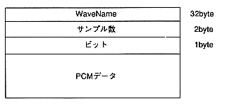
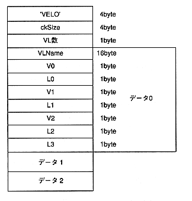

WaveName
: AIFF file name of the source that imported this waveform
Number of samples
: Number of samples in this waveform
bit
: Bit width of this waveform (8 or 16 bits)
PCM data : Actual PCM data
: Actual PCM data
